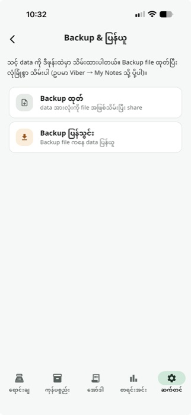

ဝန်ဆောင်မှုများ အားလုံး / Backup & Restore
Backup & Restore
Freeဆိုင်ဒေတာအားလုံးကို Cloud Sync နှင့် သီးခြားစွာ JSON file တစ်ခုအဖြစ် ကိုယ်တိုင် Export/Import လုပ်နိုင်ပါတယ် — Internet မလိုအပ်သော Backup နည်းလမ်း။
Free Plan တွင် အမြဲ ပါဝင်ပါသည် — Upgrade လုပ်စရာ မလိုပါ၊ Card မလိုပါ။
အဆင့်ဆင့် အသုံးပြုနည်း

Backup ထုတ်ပါ (သို့) ပြန်သွင်းပါ
Backup ထုတ် ကို နှိပ်ရင် ဆိုင်ဒေတာအားလုံးကို JSON file တစ်ခုအဖြစ် တစ်ချက်တည်းနှိပ်၍ ရေးထုတ်ပြီး OS Share Sheet ဖွင့်ပေးသည် — ဥပမာ Viber "My Notes" ကို ပို့ထားနိုင်သည်။ Backup ပြန်သွင်း ကို နှိပ်ရင် .json file ရွေးရမည်ဖြစ်ပြီး၊ ဒေတာအားလုံးကို ရှင်းလင်းပြီး အစားထိုးမည့်အကြောင်း (Destructive Replace-all) ကို သတိပေး Confirm Dialog ပြပါလိမ့်မယ်။
သိထားသင့်တဲ့ Tips
Cloud Sync လိုချင်ရင် — Cloud Sync ကို ဆိုင်ခွဲများ (Branches) feature ကနေ သီးခြား ဖွင့်ရသည် — ဒီ Backup feature က local file backup ပဲဖြစ်သည်။
Error Handling — File format မမှန်ကန်ခြင်း စသော Error များကို ရှင်းလင်းသော မြန်မာစာသားဖြင့် ပြပေးသည် (Raw error code မဟုတ်ပါ)။
All In One POS ကို ယနေ့ပင် စမ်းကြည့်ပါ
2 လ အခမဲ့ စမ်းသပ်ကာလ — Card မလို၊ Sign up မလို။
ဒေါင်းလုပ်ဆွဲမည်